01
Anthropic 提交拟议 IPO 注册文件

Anthropic 宣布已向美国证券交易委员会提交 S-1 注册文件，拟进行首次公开募股。公司在 X 上的配套公告表示，该注册文件尚未生效。这是申报进展，并不意味着发行已经完成；大型前沿 AI 公司走向公开市场成为今日行业焦点。
每天一次，过滤 AI 噪音
Anthropic 宣布已向美国证券交易委员会提交 S-1 注册文件，拟进行首次公开募股。公司在 X 上的配套公告表示，该注册文件尚未生效。这是申报进展，并不意味着发行已经完成；大型前沿 AI 公司走向公开市场成为今日行业焦点。
OpenAI 客户案例介绍 Fanatics 使用 Shop the Look 帮助球迷搭配比赛日服装，称在约三万件 MLB 商品的测试中互动提升 10%。这是厂商发布的客户结果，指标是互动而非转化或收入，提供了 AI 商品发现的具体应用案例。

Ubicloud 的工程文章聚焦 vLLM 工具调用准确性，引发 Hacker News 讨论。采集列表没有包含修复细节。对智能体开发者而言，工具使用的可靠性不仅取决于模型，也取决于推理服务链路；服务行为变化需要通过实际任务验证。
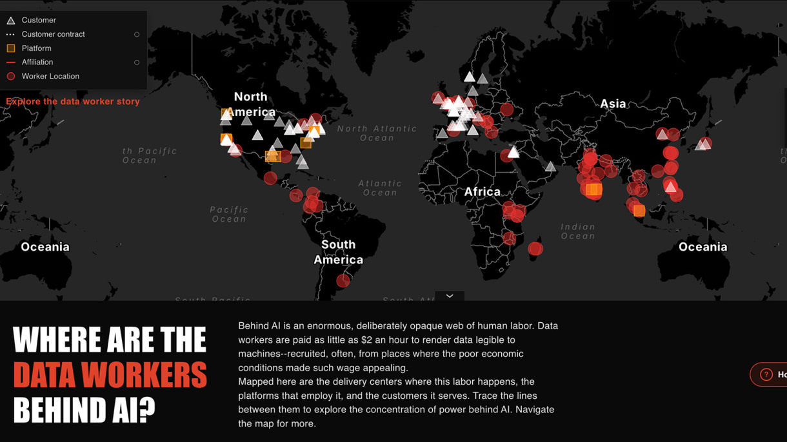
布朗大学发布文章，介绍学生绘制支撑 AI 的全球劳动网络。在通常由模型能力和资本投入主导的讨论中，该报道让幕后劳动者进入视野。采集列表没有研究方法或数量结论，但这一主题有助于理解自动化背后的人类工作。
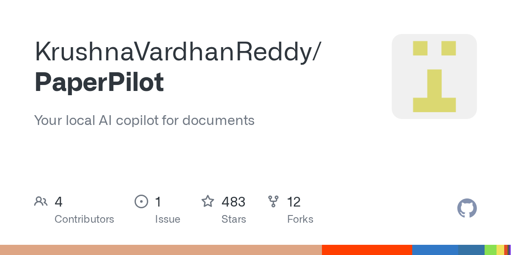
PaperPilot 在 Hacker News 上被介绍为支持 WebAssembly 和 MCP 的纯 Rust PDF 引擎，无需云端依赖。项目将文档处理连接到智能体工具接口，本地执行适合在用户设备上处理文件。列表未提供准确率或性能验证，仍需用实际 PDF 测试。
IBM CEO 关于开放权重模型已适合低成本本地部署的观点，今日在 Hacker News 引发大量讨论。链接报道日期为 10 月 22 日，因此属于旧报道重新受到关注。该观点从企业采购角度连接模型质量、部署经济性和基础设施控制权。
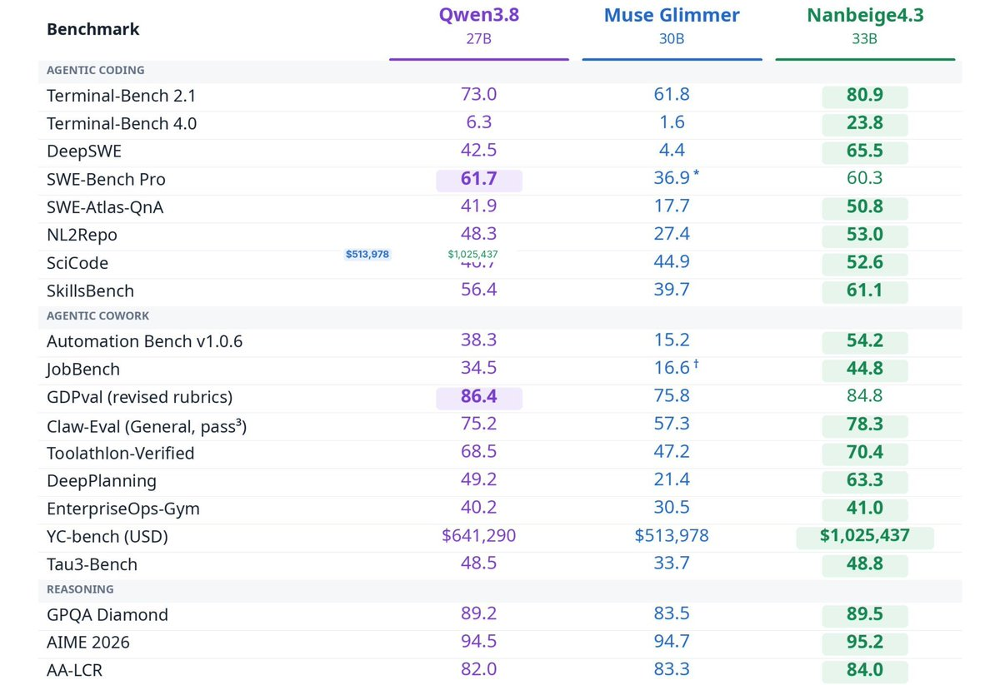
Thomas Wolf 介绍了 BOSS 直聘旗下南北阁研究团队的 330 亿参数开放权重模型，并称其在多数智能体基准上超过 Qwen 27B。这是帖子报告的基准比较，并非本刊独立测试。该案例显示，中国开放模型的参与者正扩展到专业实验室和云厂商之外。
Nathan Lambert 将 Kimi K3.1 Pro 的基准表现解读为强化学习和后训练取得进展，认为其早期版本已具有较强基座能力。他据此判断中国实验室仍在跟进能力提升。这属于对基准结果的专家解读，不代表对生产可靠性或实际使用体验的独立验证。
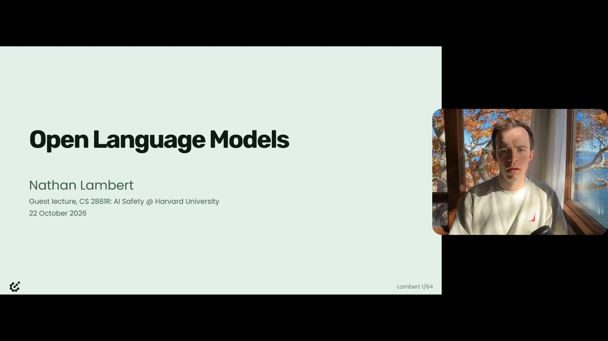
Nathan Lambert 分享了开放模型生态入门讲座，讨论蒸馏、风险管理以及未来模型获取方式。对于在托管服务与开放权重之间做选择的团队，这提供了更完整的视角：开放性不仅是能否下载权重，还涉及开发方式、分发和治理。
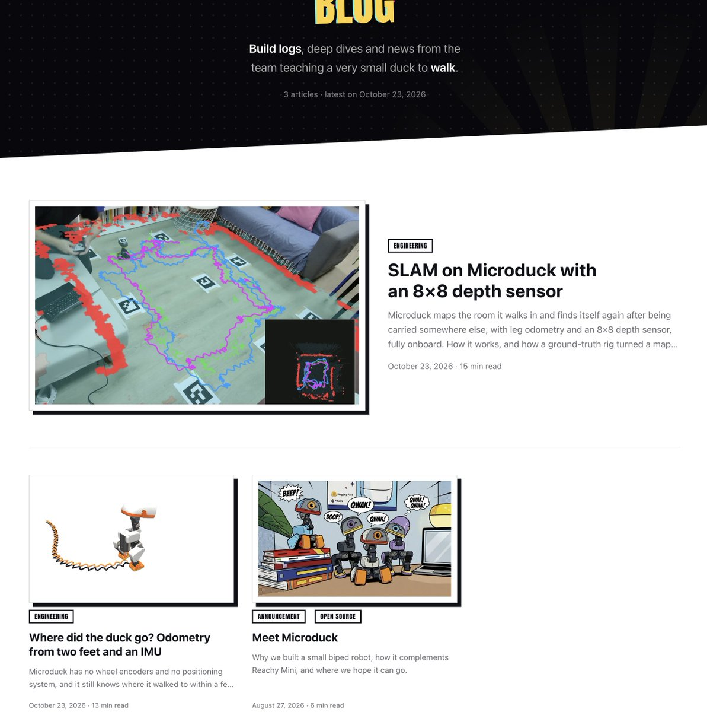
Thomas Wolf 介绍 Microduck 团队的技术文章：机器人被拿起并移动 1.5 米后，可实现约两厘米精度的重定位。据帖子描述，系统使用 64 像素深度传感器和腿部里程计，计算在机载完成，凸显高效感知与状态估计的重要性。
Google DeepMind 转发 Springer Nature 的合作公告，双方计划共同设计 AI 同行评审助手。现有信息描述的是探索性合作，没有证明系统已取代审稿人，也未提供效果指标。科研质量评估与生成论文或科学预测属于不同的挑战。
Yann LeCun 转发 Enact 公告：公司结束隐身阶段，宣布获得 3000 万美元种子前融资，方向是通过力觉和触觉提升灵巧操作。公告提供了融资与技术定位，但没有详细性能证据，反映出资本对机器人感知和控制基础问题的关注。
Google 转发公司消息，称 Gemini 4 Argon 正用于聚变、生物学和量子领域研究。采集到的摘要没有实验细节或独立验证；值得关注的是科学应用范围，而具体成果仍需结合原始研究及领域专家的验证方式评估。
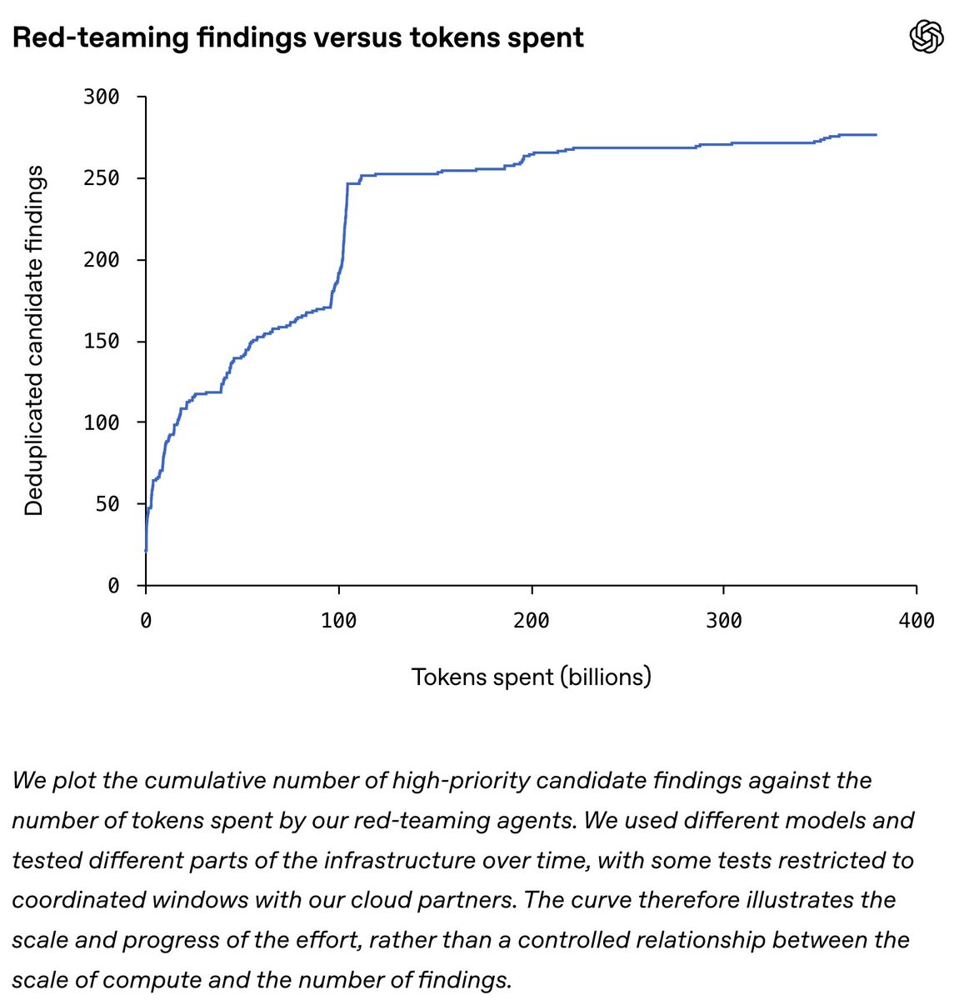
Noam Brown 表示，团队正在以大规模智能体协作开展基础设施红队测试，寻找并修复漏洞。他将其与先前消耗逾千亿 token、并声称解决 Navier–Stokes 千禧年难题的工作联系起来；这一非凡数学主张不能仅凭帖子视为已获独立确认。
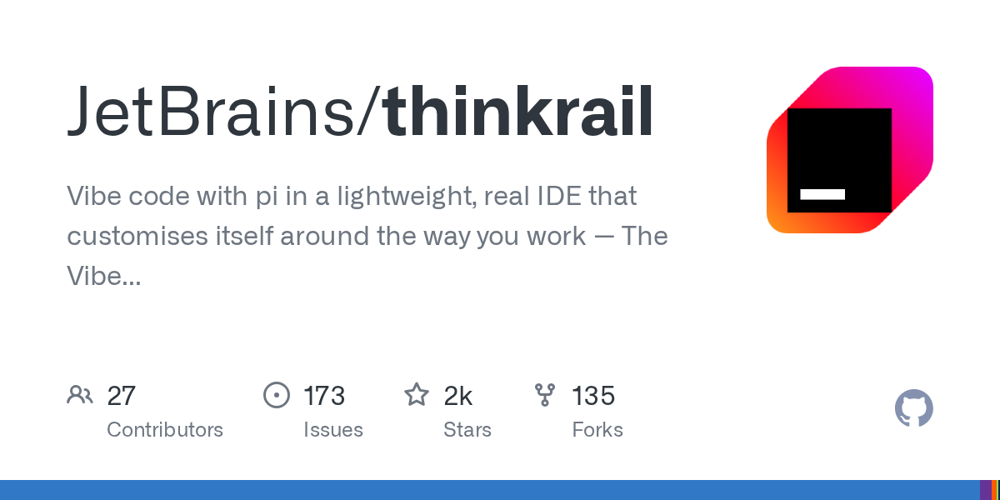
JetBrains 的 Thinkrail 仓库描述了一款与 pi 配合、可适应开发者工作方式的轻量 IDE，今日进入采集到的 GitHub 热门项目。其主要语言为 TypeScript。项目体现了将 AI 编程融入完整开发环境的方向，但生产力提升仍取决于实际编辑和调试体验。
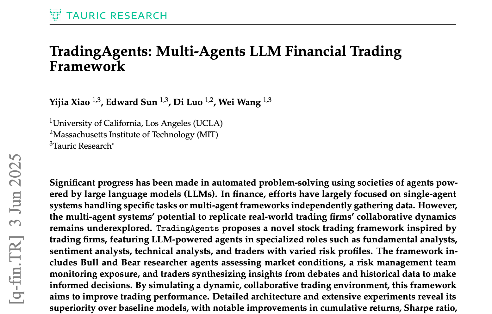
TradingAgents 是基于多个语言模型智能体的 Python 金融交易工作流框架，仍在采集到的 GitHub 热门项目中，记录的最新更新早于报告日期。它提供领域化编排案例，但仓库热度不证明投资表现，工作流功能与金融决策质量需要分别评估。
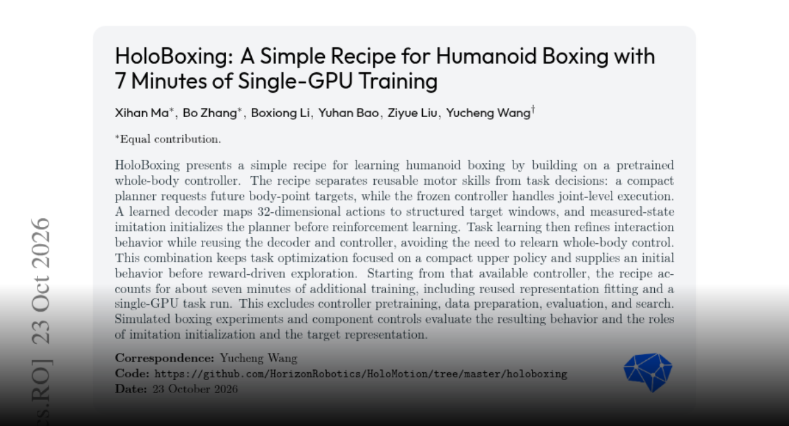
HoloBoxing 将任务规划与全身运动控制分离，用紧凑规划器请求身体目标点，由冻结控制器执行。模仿学习初始化后再用强化学习优化。作者报告额外单 GPU 训练约七分钟，但不含预训练、数据准备、评估和搜索，应理解为增量任务训练成本。
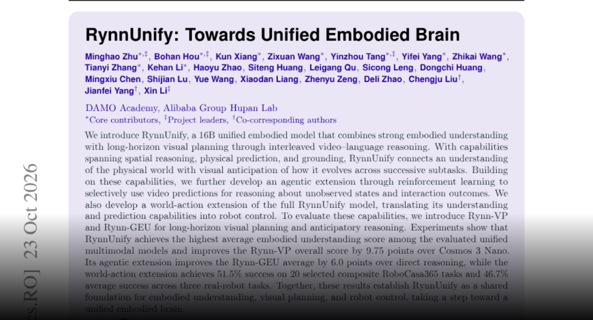
RynnUnify 是 160 亿参数具身模型，通过交错视频与语言推理结合空间理解、物理预测和长时规划。扩展版本用强化学习选择何时使用视频预测，并探索机器人控制。作者在规划评估和有限真实机器人任务上报告结果，重点在于连接理解、预测和行动。
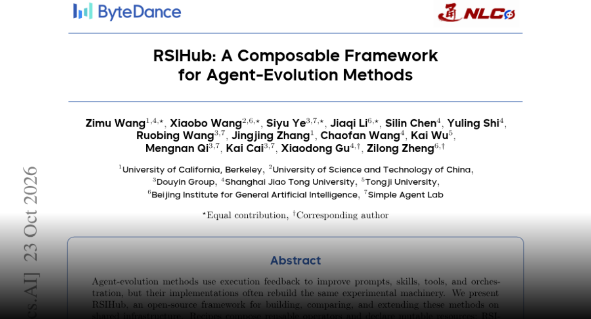
RSIHub 提供复用基础设施，让智能体根据执行反馈修改提示、技能、工具和编排，同时将评估隔离于可修改资源之外并记录版本谱系。作者复现多种方法，最大观察到的单次通过率增益为 13.5 个百分点，但排名随设置变化，收益不总能迁移到留出任务。
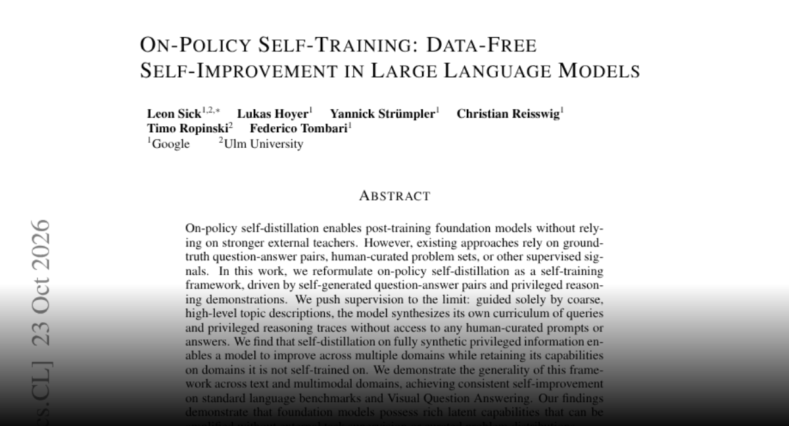
这项同策略自训练研究仅从粗粒度主题描述出发，由模型生成问题、答案和额外推理轨迹，无需人工整理题目。作者报告语言与视觉问答评估的提升，并保留其他领域能力。结果说明测试条件下可挖掘既有能力，而非证明无限自主改进。
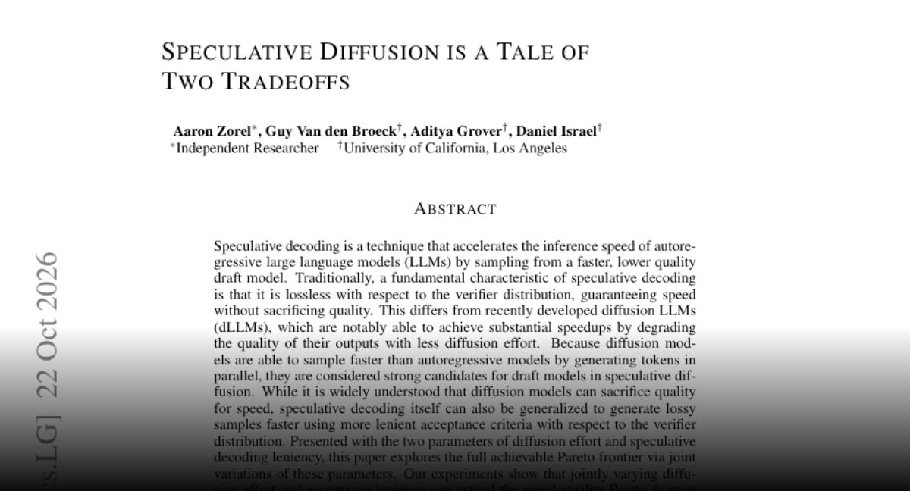
论文研究将扩散模型用于推测解码草稿，同时调节扩散计算量和验证器接受宽松度。作者报告比单步扩散草稿更好的速度质量前沿。放宽接受条件可能改变输出分布，因此部署时需同时评估质量变化与速度收益。
MultiAgent-OPD 结合在线蒸馏与强化学习，联合训练共享参数的领导、搜索和回答团队。冻结教师为搜索者提供 token 级过程监督，领导者依据团队成功学习。作者在七个数据集上报告四次尝试的宏平均指标为 38.68%，重点是改进层级团队内部的训练信号分配。